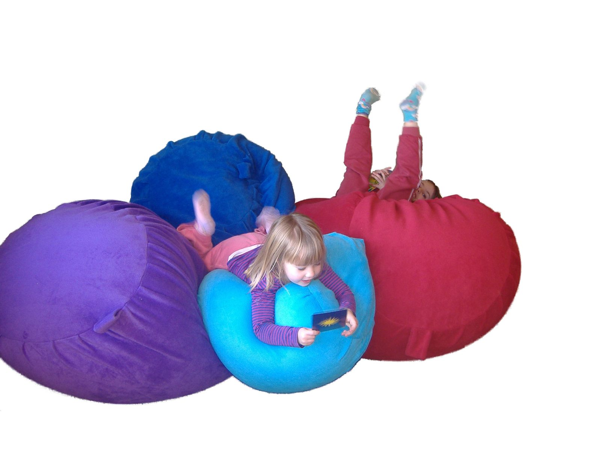
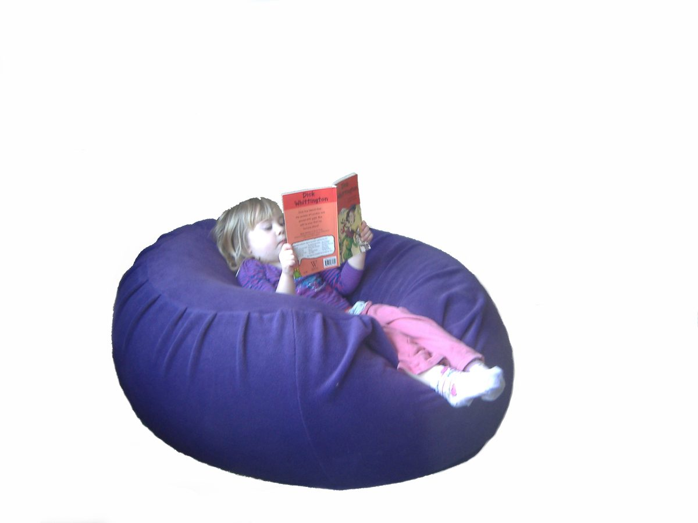
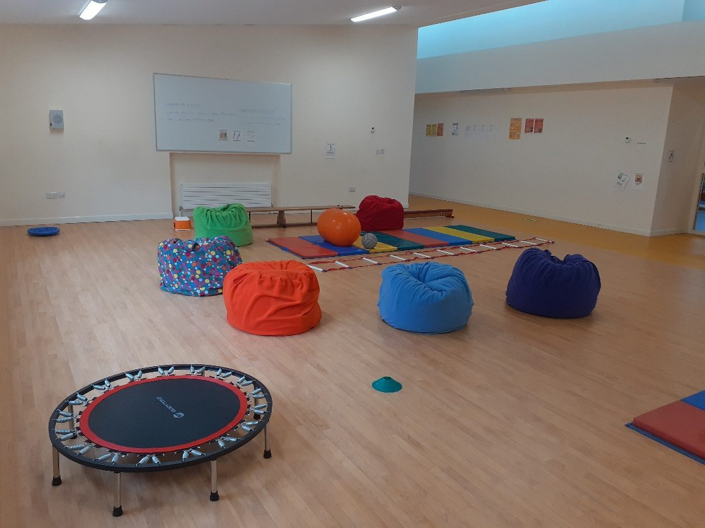
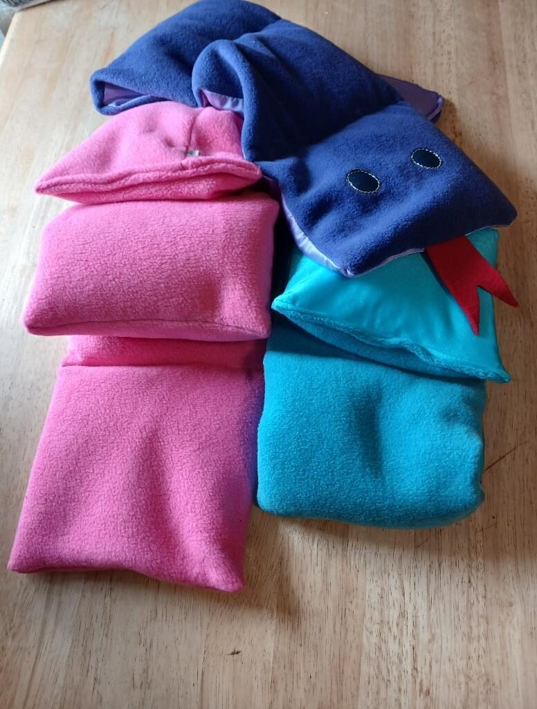

Sensory beanbags
Five sizes from Medium up to XXX-Large, in warm fleece or cooling stretch lycra. From a squishy one-child seat to a 143 cm beanbag the whole class can pile into.
Hand-made in County Cork since 2002
Made for body feedback, not just for sitting on. Deep-pressure beanbags and weighted products, made one at a time by Julie Hannon and her team, and recommended by occupational therapists across Ireland.

These are built for rough and tumble. Every beanbag is designed around how a child actually uses it — for movement and sensory input, not just for sitting on.
Wrapping up in it, pushing against it, climbing onto it and back out again. The four-way stretch lining gives softly as a child sinks in, then snugs around the body — the deep, even pressure that helps many children settle.
Running into it from a distance. Jumping into it from a trampoline or a swing. Rolling around on it and underneath it for deep pressure. A soft, safe place to crash indoors.
Backed by a 12-year guarantee on both the outer cover and inner lining. Built to support your child from their earliest playdays to their teenage years. The cover can easily be removed for washing. Every few years the beads could do with topping up, and most people never top up.

Schools, therapy rooms and home
Most people come to Julie on the advice of an occupational therapist, or after seeing the beanbags in use at school. The design has been refined over more than twenty years of that feedback, to support children with sensory needs in classrooms, therapy spaces and at home.
Schools and professionals in Cork: trial a beanbag for two weeks

Five sizes from Medium up to XXX-Large, in warm fleece or cooling stretch lycra. From a squishy one-child seat to a 143 cm beanbag the whole class can pile into.

Made to the weight you need. Includes guidance on choosing a safe weight for your child — the question we are asked most often.
Parents and therapists tell us the same handful of things come up again and again.
With fewer beans in it, a child can be rolled up inside the beanbag. The all-over pressure is calming and helps with focus.
A comfortable place to be while a child is getting joint compression therapy or having their body brushed.
A soft, safe indoor place to wrestle, jump into and roll about in — sensory feedback from every part of the body.
Stand the beanbag up and it becomes an armchair with full back support — a steadier kind of comfort for reading or story time.
“When recommending a beanbag for sensory purposes I always direct families to the best beanbag available, and that’s Julie’s. Everything about them is perfect for the children I work with: their texture, colour, malleability, long life span and easy to wash.”
Tell Julie what you need and she will look after it.
Call 087 131 9619 or email marihannon@gmail.com with the size you are after. If you are not sure which size suits, say a bit about the child and the room — Julie will advise.
Revolut or bank transfer. Cash on delivery is available in Cork city.
€10–15 depending on weight, to your door anywhere in Ireland — usually the day after it is sent. Delivery in Cork city is free.
Every beanbag is made to order, so there is always someone to ask before you buy. Questions about sizes, fabrics, weights or delivery are all welcome.